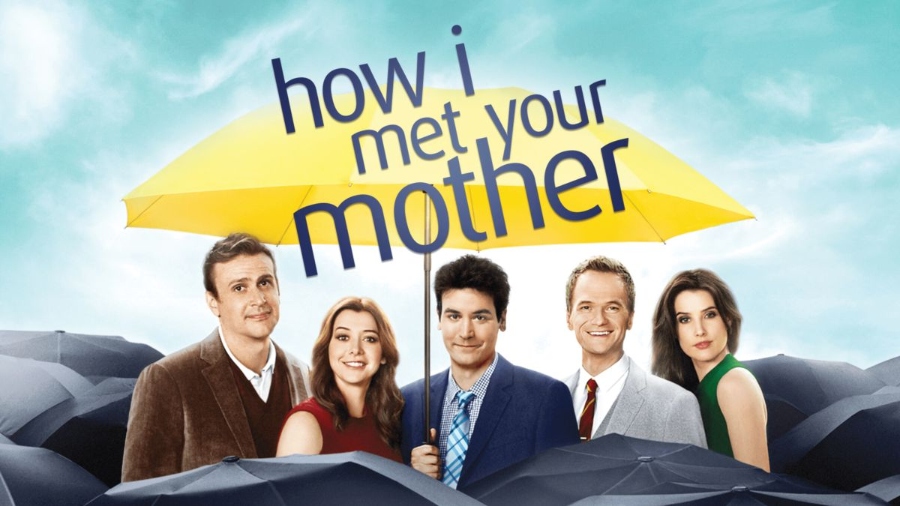

Breaking Bad

Breaking Bad, Vince Gilligan tarafından yaratılan ve AMC'de yayımlanan bir Amerikan suç drama dizisidir. Çekimleri, hikâyenin de geçtiği Albuquerque, New Mexico'da yapılan dizi, ellinci yaş gününü kutladıktan sonra üçüncü evre akciğer kanseri olduğunu öğrenen kimya öğretmeni Walter White'ın (Bryan Cranston) uyuşturucu baronuna dönüşme sürecini konu almaktadır. Walter, ölmeden önce ailesini güvence altına almaya yetecek kadar para bırakmak için eski öğrencisi Jesse Pinkman (Aaron Paul) ile metamfetamin üretmeye başlar ve suç dünyasına adımını atar. 20 Ocak 2008'de ilk bölümü yayımlanan dizi, beș sezon süren 62 bölümün ardından 29 Eylül 2013'te sona ermiştir. (Kaynak: wikipedia.org)
How I Met Your Mother
How I Met Your Mother, ABD'de yayın yapan CBS kanalında, 19 Eylül 2005'ten 31 Mart 2014'e kadar yayınlamış olan, yaratıcılığı ve yapımcılığını Carter Bays ve Craig Thomas'ın, 196 bölümünün yönetmenliğini Pamela Fryman'in, başrollerini Josh Radnor, Jason Segel, Neil Patrick Harris, Cobie Smulders ve Alyson Hannigan'ın üstlendiği durum komedisi türündeki televizyon dizisidir. 31 Mart 2014'te yayınlanan 40 dakikalık özel bölümüyle sona ermiştir. (Kaynak: wikipedia.org)
The Walking Dead

The Walking Dead (Türkçe: Yürüyen Ölüler), Frank Darabont tarafından geliştirilen bir Amerikan televizyon dizisidir. Hikâyesi, Robert Kirkman, Tony Moore ve Charlie Adlard'ın aynı adlı çizgi romanına dayanmaktadır. Dizinin başrolünde, bir suçlu tarafından vurulmasının ardından girdiği komadan beklenmedik biçimde uyanan ve artık tüm dünyaya George A. Romero'nun korku filmlerindeki zombileri andıran etobur aylakların egemen olduğunu keşfeden Şerif Yardımcısı Rick Grimes rolüyle Andrew Lincoln yer almaktadır. Rick, bulunduğu hastaneden ayrılarak ailesini bulmak için yola koyulur ve yol boyunca bu yeni dünya düzeninde sağ kalmayı başarabilmiş, kendisi gibi yaşam savaşı veren diğer birçok kişiyle karşılaşır ve yola onlarla devam ederek kendi grubunu oluşturur. (Kaynak: wikipedia.org)